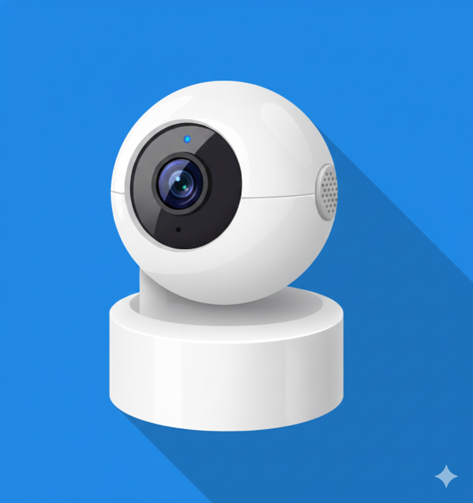
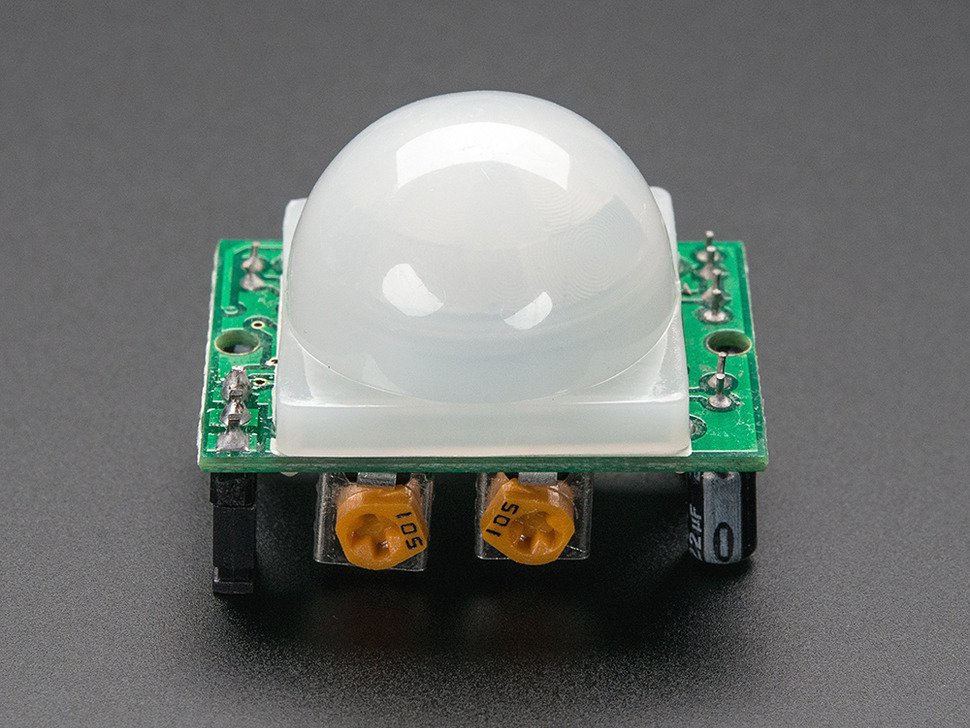
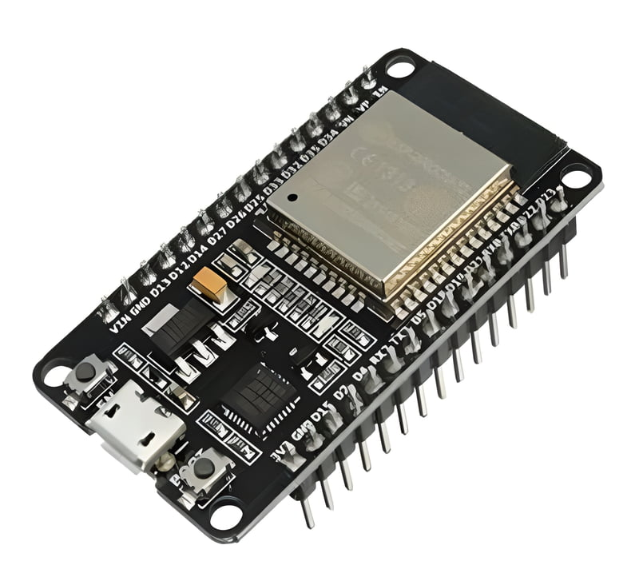
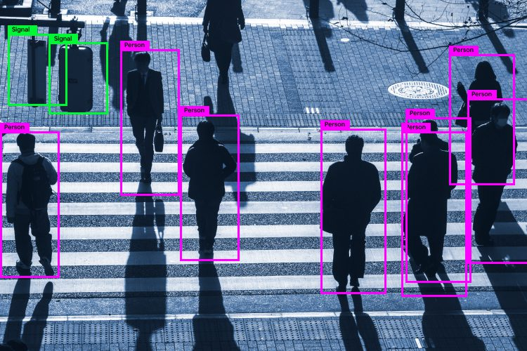
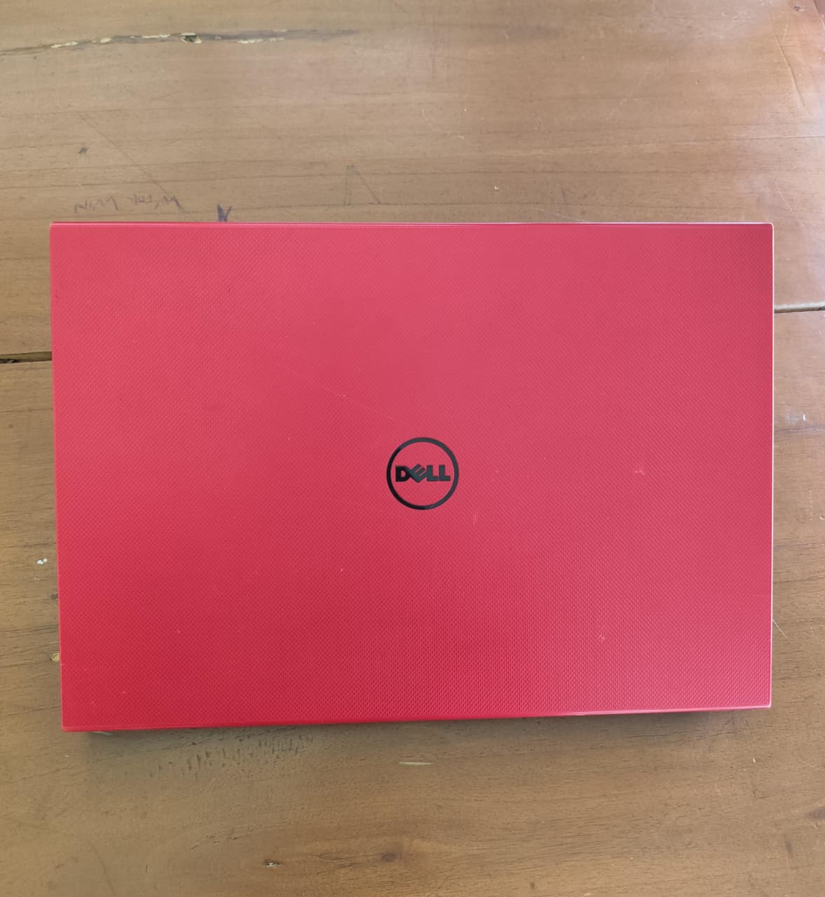

Overview
Latar Belakang
Proyek Smart Secure Lighting System dibuat untuk mengurangi pemborosan energi dan meningkatkan pemantauan keamanan pencahayaan ruangan. Sistem ini menggabungkan kamera berbasis YOLOv8 untuk mendeteksi orang dan sensor PIR untuk mengonfirmasi gerakan, lalu menggunakan logika kendali untuk menyalakan lampu sesuai area: ruangan dibagi menjadi 4 grid dan tiap grid memiliki satu lampu, sehingga saat kamera mendeteksi orang di grid tertentu dan PIR aktif, lampu pada grid tersebut menyala, sedangkan jika salah satu kondisi tidak terpenuhi lampu tetap mati. Selain itu, tersedia fitur notifikasi Telegram berbasis waktu, di mana pada jam yang ditentukan ketika kedua sensor mendeteksi aktivitas, sistem mengambil screenshot tampilan kamera dan mengirimkannya ke Telegram sebagai peringatan adanya pergerakan orang.
Tujuan Sistem
🔋 Hemat Energi
Lampu hanya menyala saat ada orang.
🔐 Keamanan Tambahan
Mendeteksi aktivitas manusia secara otomatis.
📍 Menentukan Lokasi
Sistem memilih lampu terdekat sesuai posisi orang.
🎥 Deteksi Akurat
Kamera + YOLOv8 + PIR memberikan akurasi tinggi.
Cara Kerja Sistem
Komponen Sistem
Hardware

Kamera
Perangkat input visual untuk memantau ruangan secara real-time. Frame video dari kamera menjadi sumber utama proses deteksi manusia.

Sensor PIR
Sensor gerak berbasis infra merah pasif untuk mendeteksi perubahan panas tubuh/manusia. Dipakai sebagai verifikasi tambahan agar lampu tidak mudah “false trigger”.

ESP32
Mikrokontroler utama yang mengolah input sensor, menjalankan logika kontrol, serta mengirim/ menerima data melalui Wi-Fi (misalnya via MQTT) untuk mengendalikan sistem.
Lampu (LED)
Aktuator/output pencahayaan. Lampu menyala atau mati berdasarkan keputusan sistem (hasil deteksi kamera + status PIR + aturan kontrol).
Software

YOLOv8
Model deteksi objek berbasis AI untuk mengenali keberadaan manusia pada video. Output-nya berupa koordinat (bounding box) dan confidence yang dipakai untuk keputusan kontrol.
Mosquitto (MQTT Broker)
Broker MQTT yang berperan sebagai “perantara pesan” antara perangkat/komponen. Membantu komunikasi publish/subscribe agar data status dan perintah kontrol lebih terstruktur dan real-time.
Telegram (Bot/API)
Kanal notifikasi dan monitoring jarak jauh. Sistem dapat mengirim pesan status (mis. lampu ON/OFF, deteksi manusia) dan peringatan penting melalui bot Telegram.

Firebase
Platform backend (BaaS) untuk autentikasi dan manajemen data aplikasi. Pada proyek ini dapat dipakai untuk Firebase Auth (login/register) dan Firestore sebagai database agar data user, role, serta konfigurasi sistem tersimpan rapi dan bisa diakses real-time.
VS Code
IDE/alat pengembangan untuk menulis, menjalankan, dan debugging program (mis. script AI, kontrol ESP32, serta konfigurasi komunikasi). Membantu mempercepat pengembangan dan pemeliharaan sistem.
Honorable Mention

Dell Inspiron 14 (i3-4005U)
Laptop andalan untuk ngoding, testing, dan ngerapihin dokumentasi proyek. Walau speknya sederhana, dia jadi “mesin tempur” yang konsisten dipakai selama proses pengembangan.
ChatGPT 5.2
Asisten AI untuk membantu perancangan ide, perapihan dokumentasi, dan troubleshooting kode/arsitektur. Dipakai sebagai “co-pilot” pengembangan agar proses iterasi lebih cepat dan rapi.